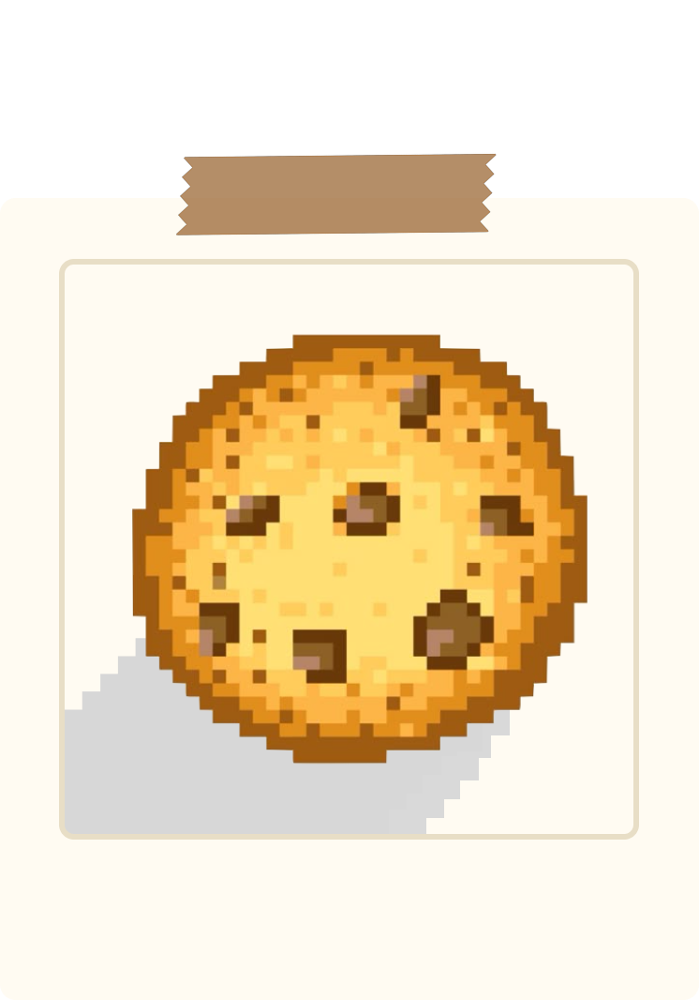
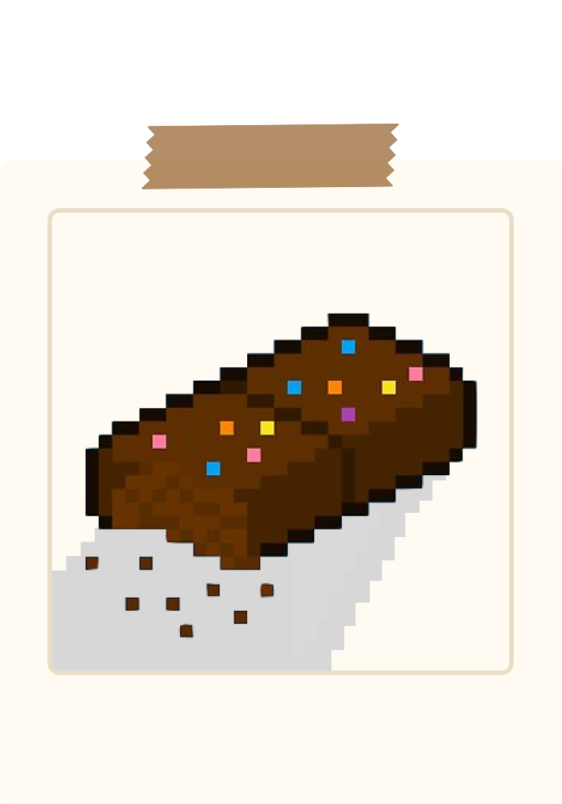

1. preheat the oven: preheat your oven to 350°F (175°C). grease a
9x5 inch loaf pan.
2. mix dry ingredients: in a large bowl, whisk together flour,
sugar, brown sugar, cocoa powder, baking powder, baking soda, and
salt.
3. combine wet ingredients: in another bowl, whisk together eggs,
milk, oil, yogurt, and cooled espresso.
4. combine mixtures: gradually add the wet ingredients to the dry
ingredients, mixing until just combined.
5. bake: pour the batter into the prepared loaf pan and bake for
50–60 minutes, or until a toothpick inserted into the center comes
out clean. let cool in the pan for 10 minutes, then transfer to a
wire rack to cool completely.
6. make the glaze: in a small saucepan, heat the heavy cream until
just simmering. remove from heat and add the chopped dark
chocolate and butter. let sit for a minute, then stir until
smooth.
7. glaze the cake: once the loaf cake is completely cool, pour the
dark chocolate glaze over the top, allowing it to drizzle down the
sides.
maryam's bakery

prize unlocked!
you have won my favorite chocolate chip cookie recipe
ingredients
for 12 cookies
1/2 cup granulated sugar (100 g)
3/4 cup brown sugar (165 g), packed
1 teaspoon salt
1/2 cup unsalted butter (115 g), melted
1 large egg
1 teaspoon vanilla extract
1 1/4 cups all-purpose flour (155 g)
1/2 teaspoon baking soda
4 oz milk or semi-sweet chocolate chunks (110 g)
4 oz dark chocolate chunk (110 g), or your preference
instructions
1. in a large bowl, whisk together the sugars, salt, and butter
until a paste forms with no lumps.
2. whisk in the egg and vanilla, beating until light ribbons fall
off the whisk and remain for a short while before falling back
into the mixture.
3. sift in the flour and baking soda, then fold the mixture with a
spatula (be careful not to overmix, which would cause the gluten
in the flour to toughen resulting in cakier cookies).
4. fold in the chocolate chunks, then chill the dough for at least
30 minutes. for a more intense toffee-like flavor and deeper
color, chill the dough overnight. the longer the dough rests, the
more complex its flavor will be.
5. preheat oven to 350°f (180°c). line a baking sheet with
parchment paper.
6. scoop the dough with an ice-cream scoop onto a parchment
paper-lined baking sheet, leaving at least 4 inches (10 cm) of
space between cookies and 2 inches (5 cm) of space from the edges
of the pan so that the cookies can spread evenly.
7. bake for 12–15 minutes, until the edges have started to barely
brown.
8. cool completely before serving.
9. enjoy!
maryam's bakery

prize unlocked!
you have won my favorite brownie recipe
ingredients
for 9 brownies
8 oz good-quality chocolate (225 g), semi-sweet
12 tablespoons butter, melted
1 1/4 cups sugar (250 g)
2 eggs
2 teaspoons vanilla extract
3/4 cup all-purpose flour (95 g)
1/4 cup cocoa powder (30 g)
1 teaspoon salt
instructions
1. preheat the oven to 350°f (180°c). line an 8-inch (20 cm)
square baking dish with parchment paper.
2. chop the chocolate into chunks. melt half of the chocolate in
the microwave in 20-second intervals, saving the other half for
later.
3. in a large bowl, mix the butter and sugar with an electric hand
mixer, then beat in the eggs and vanilla for 1–2 minutes, until
the mixture becomes fluffy and light in color.
4. whisk in the melted chocolate (make sure it's not too hot or
else the eggs will cook), then sift in the flour, cocoa powder,
and salt. fold to incorporate the dry ingredients, being careful
not to overmix as this will cause the brownies to be more
cake-like in texture.
5. fold in the chocolate chunks, then transfer the batter to the
prepared baking dish.
6. bake for 20–25 minutes, depending on how fudgy you like your
brownies, then cool completely.
7. slice, then serve with a nice cold glass of milk!